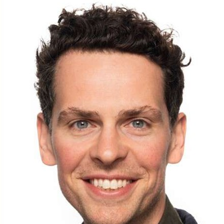

Joakim Coleman Ebeltoft
Researcher · Department of Psychology, University of Oslo
I study how families pass on advantage, and how much of it runs through genes. Parents give their children both resources and DNA, so the link between family background and children's outcomes is partly genetic. I combine Norwegian population registers with twin, sibling and genomic data to control for genes and estimate what family income and wealth really do for children's education, economic outcomes and mental health.

Research
I am a licensed psychologist turned inequality researcher. Most studies of family background cannot tell whether a parent's income or wealth matters in itself, or whether it stands in for genes that parents and children share. My work tackles this genetic confounding directly, using whole-population register data together with twin, sibling and polygenic designs.
Publications
Peer-reviewed
- Parental wealth and mental disorders in Norway (2006–2023): a nationwide registry-based study of 1.4 million young people
- The genetic and environmental composition of socioeconomic status in Norway Publication Prize 2025
- Multivariate maternal effects across the internalizing–externalizing spectrum in childhood
- Genetic associations with educational fields
- The nature of the relation between mental well-being and ill-being
Working papers
Background
- 2023–2026
- PhD in Psychology, University of Oslo (defended 11 August 2026)Dissecting intergenerational patterns of socioeconomic status and mental disorders in Norway
- 2024
- Visiting researcher, MRC Integrative Epidemiology Unit, University of Bristol
- 2024
- Visiting researcher, European University Institute, Florence
- 2021–2022
- Psychologist, child protection and family therapy (MST-CAN), Bærum Municipality
- 2015–2022
- Co-founder and board chair, POFUNational mental health education NGO reaching about 10% of Norwegian ninth graders each year
- 2015–2021
- Professional degree in psychology (Cand. Psychol.), University of Oslo
Contact
Department of Psychology, University of Oslo
joakim.ebeltoft@gmail.com